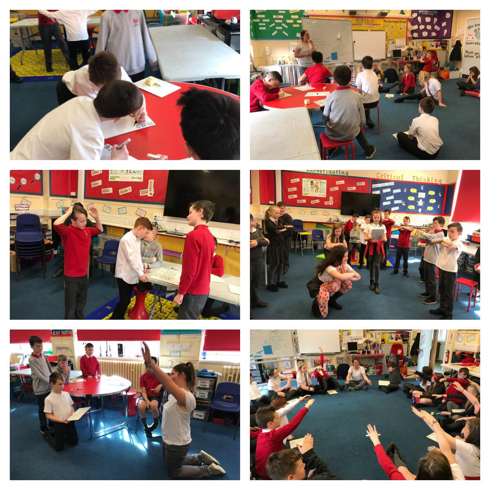

Page Not Found
Page not found. Your pixels are in another canvas.

A list of all the posts and pages found on the site. For you robots out there is an XML version available for digesting as well.
Page not found. Your pixels are in another canvas.
About me
This is a page not in th emain menu
In the past, I’ve been accused of having “too much fun,” at work. That it “looks like I don’t do anything,” and I’m “always off away from the lab.” I post “too many photos of having fun,” and am generally far too cheery when folks ask me how I’m doing. Apparently, “fantastic!” and “living the dream!” are inappropriate responses to this question. It’s as if having fun, enjoying my lab, loving the fact that my work is the bomb-diggity, means that I can’t possibly be doing any real work.
Human-Computer interaction is hard, but our technological interfaces have improved over time. From terminal commands to touchpads, and text to voice interfaces, consumer electronics industries understand that ease-of-use is of the utmost importance to customers. The ultimate evolution of this idea is a frictionless Brain-Computer Interface (BCI).
How can we, as scientists, do better to inform the public of what we’re actually doing?
Humans are notoriously bad at self-reporting everything about ourselves, from our nutritional habits to sleep patterns. So, it always strikes me as odd that social roboticists seem to insist on “measuring,” social personality traits with surveys and personal reports.
As a new PhD student, starting at a new university, in a new city, in a new country, I’ve found myself introducing my work to many new people lately. I have worked in and (plan to, remember, just started) study machine learning for social and emotional interactions in robots. I’ve experimented with many ways to introduce this topic: “emotional intelligence, but for robots,” “social robotics,” “machine learning for robotic emotions.” Try as I might, I always get some flavor of this response:
I’ve had many friends basically say they don’t believe “women are raised to…” and use this skepticism to put the burden of gender inequality on women. Here are some concrete examples I can think of that support the idea that, currently, women are brought up in society to…
An honest, cheeky, unfiltered brain dump of why I’m ready to go back. Partially an exercise to aid writing my statement of purpose, maybe somebody else can solidify
A chat for my friends’ blog series, reposted from original found here
Obligatory Spoiler Alert.
Just some great pants.
Dark skin and Scottish accents and societally engrained biases, oh my!
Being a woman is really, really weird. As, I assume, being a man can be really, really weird. But I put forth the idea that being a woman leads to a constant rollercoaster of crazy second-guessing and walking a stupidly fine line between “being assertive” and “playing the victim.”
There has been a lot of talk recently about Deep Learning. Namely, how its recent resurgence is kicking ass across the board on machine learning benchmarks left and right. At the 2010 (and 2012) ImageNet Large Scale Image Recognition Competition, a group from University of Toronto, led by Geoffrey Hinton, built a neural net which outperformed the competition by 10% reduction in classification error rate (misrecognizing an image, so saying a picture that is in fact of a magnifying glass is a photo of scissors). This essentially brought neural networks back into play for the field of computer vision, where it dominates what most of us consider to be the coolest latest technology. Facebook’s face recognition? Neural network. Google’s self-driving cars? Controlled by neural nets. The tempting logical jump to make here is: artificial intelligence? Let’s just use a neural net!
When loving, well-meaning men in my life don’t understand the problem with gender separation, I try to write.
Mentor and Organizer
-
President
-
Instructor
-
Volunteer Mentor & Organizer
-

Mentor and Organizer
-
Volunteer
-
SRC Class Representative
Volunteer

Committee Member
Organizer
Volunteer internship with (AI for Good)[aiforgood.co.uk] working on mixed-method data analysis for project in collaboration with (Care Leavers)[https://www.careleavers.com/] and (Spectra)[https://spectraconnect.co.uk/] to identify obstacles and improve outcomes for children leaving government care.
Data analyst on project involving NLP and text mining to gather data on human trafficking.
Data Science Workshop for Qualitative Grad Students
Team lead for designing, organizing, and teaching 3-day datascience workshop including data mining, visualizations, and website hosting using R and R Studio for novices in qualitative research.
Tufts University, Department of Biomedical Engineering
-
Tufts University, Department of Computer Science
-
Spotify Inc.
-
Jibo Inc.
-
Jibo Inc.
-
Cogito Corp.
-
Jibo Inc.
-
Cogito Corp.
-
Category Learning and Acquisition with Connectionist Networks: A Proportional Difference Approach
Bi-Axial Emotional System
Genetic algorithms applied to LED badges 
2019 - 2019-01-07
An academic review of The Neuroscience of Emotion by Adolphs and Andersson.
Recommended citation: Saund, Carolyn. (2019). "Neuroscience of Emotion." The Psychologist. 32(1).
2019 - 2019-01-09
An article on strategies young researchers can adopt in order to responsibly contextualize research to the general public.
Recommended citation: Saund, Carolyn. (2019). "Responsibly reporting neuroscientific findings" Bright Brains. British Neuroscience Association.
2019 - 2019-03-29
An ERASMUS joint effort across 16 universities to foster collaboration and qualitative data analysis methods for students of Psychological Methods.
Workshops on Copula Theory, Ising Models, Knowledge Space Theory, as well as a student showcase of an RShiny app.
See app here
See more information about the workshop here
CIC
-
Engineering for Kids!
Human-Computer Interfaces
It’s 2016, and humans don’t give instructions through terminals anymore. The future of interfaces is social. Natural language understanding, conversational dialogs, and subtle social cues are the new instruction set – what challenges exist in the vast field of HCI, and how can current machine learning techniques address them?
"Alexa, Read the Room."
Emotions govern so much of human behavior – why are voice agents taking so long to catch up? What does the future of an emotional voice interface look like, and how will the ability to perceive and express emotions influence the development of voice interfaces in the future?
Social Robotics Workshop
What is a social robot? What applications are social robots uniquely suited for, and how can we design interactions that are useful, and socially fulfilling?
Imposter Syndrome
There’s earnest self-improvement and criticism, and then there’s crippling self-doubt. Learn techniques to differentiate between subtlties of the two, and identify self-sabotaging behaviors you can mitigate to reach your highest potential.
University of Glasgow Psychology Department
Glasgow Theater Company
Pannelist and speaker following a production of a play about the role of emotional AI in the future.
17 Things You Never Knew About Social Robots. Number 10 Will SHOCK You!
University of Glasgow Psychology Department
Introduction to crowdsourcing for scientific data / workshop for Methods and Metascience group (professors and graduate students in UofG Psychology). Slides.
3 Minute Thesis runner-up in postgraduate researchers at University of Glasgow. <iframe width="560" height="315" src="https://www.youtube.com/embed/yGveWYGQOUE" frameborder="0" allow="accelerometer; autoplay; clipboard-write; encrypted-media; gyroscope; picture-in-picture" allowfullscreen></iframe>
FameLab Scottish first runner-up discussing what “smart” technology really means and why calling it “smart” is perhaps a bit of a misnomer.